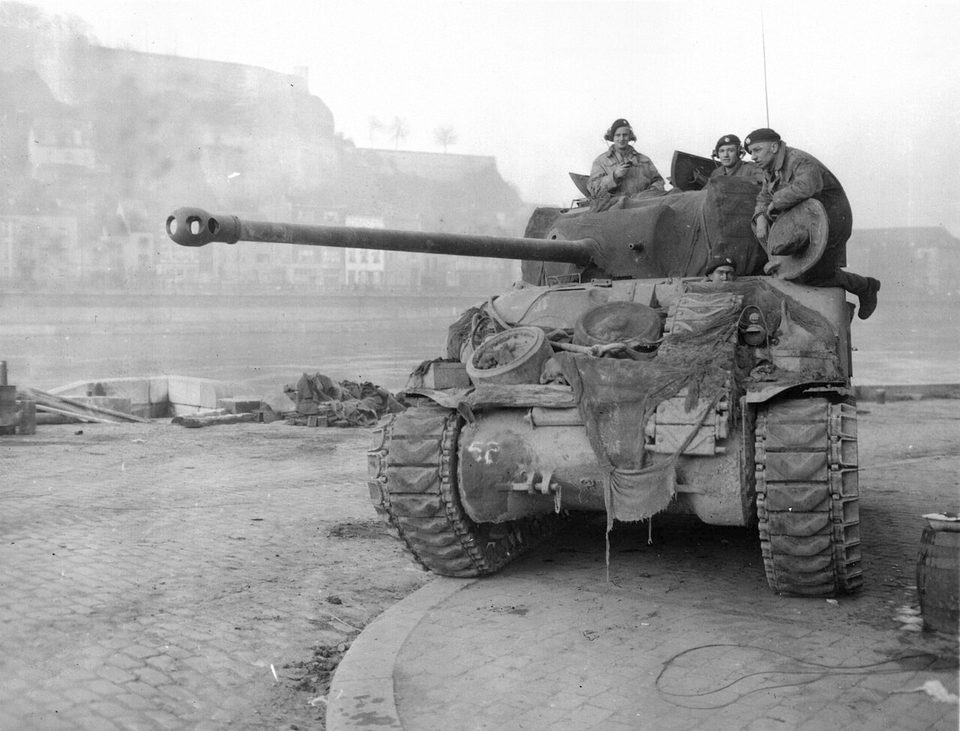

Normandía, 1944: carros en el desembarco y después
Los carros de la campaña de Normandía de 1944: el Sherman y el Firefly frente al Panther y el Tiger, los vehículos especiales británicos y los carros que llegaron en planeador.

El día D
En la noche del 6 de junio de 1944, una veintena de carros ligeros Tetrarch aterrizaron en planeador con la 6.ª División Aerotransportada británica: era la primera vez que se llevaban carros al campo de batalla por aire.
En Normandía intervinieron muchos vehículos especiales construidos sobre el Churchill, como el AVRE de ingenieros, con un mortero de demolición, o el lanzallamas Crocodile.
Sherman contra Panther
El carro más numeroso de los aliados era el M4 Sherman. Frente al Panther, muy peligroso a larga distancia, su cañón de 75 mm se quedaba corto. Por eso fue tan importante el Sherman Firefly británico, con el cañón de 17 libras: a uno de ellos se atribuye la destrucción del carro del as alemán Michael Wittmann en agosto de 1944.
Los británicos estrenaron también el rápido Cromwell. Desde julio de 1944 apareció el Tiger II, y combatieron el Jagdpanther, el Jagdpanzer IV y el Sturmpanzer IV «Brummbär».
Lo que se aprendió
Las pérdidas frente a los carros alemanes en Normandía, y después en las Ardenas, convencieron al ejército estadounidense de que necesitaba un carro mejor armado, el M26 Pershing. Los canadienses, por su parte, convirtieron sus carros Ram en transportes blindados Kangaroo para que la infantería avanzara protegida junto a los carros.
Artículo elaborado a partir de las fichas de esta enciclopedia, donde se citan las fuentes de cada dato.